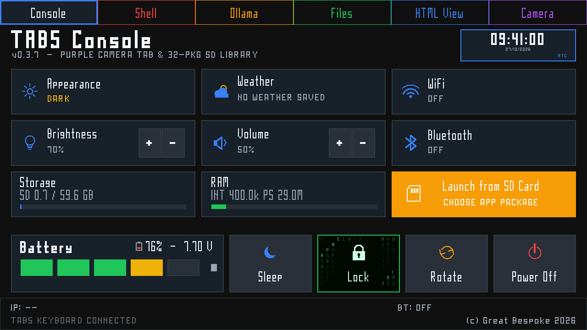
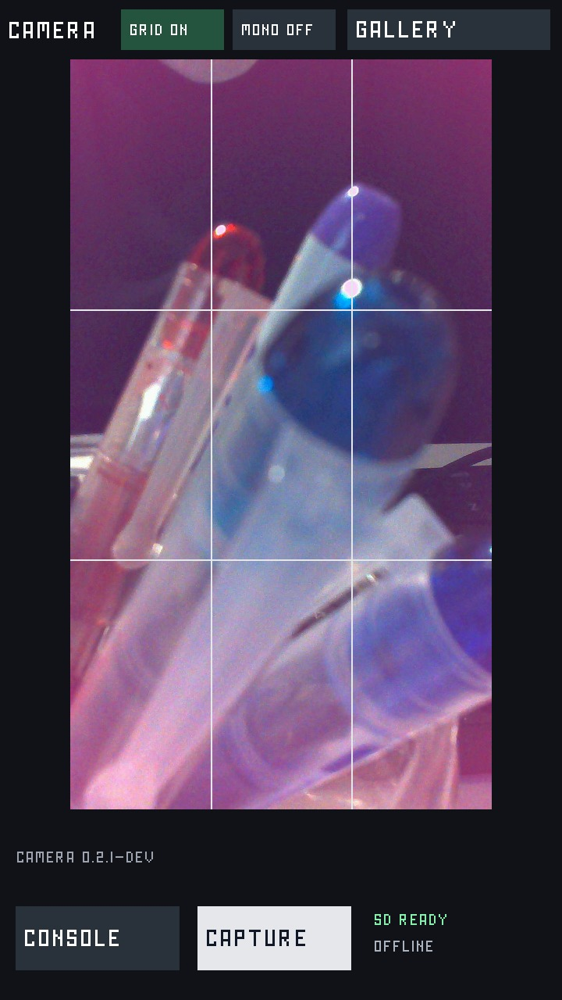
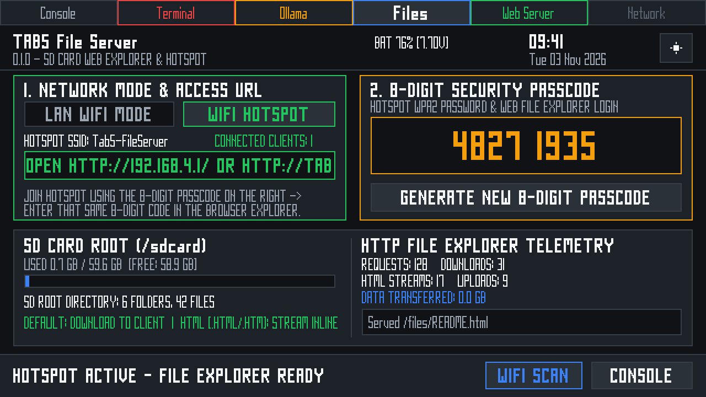
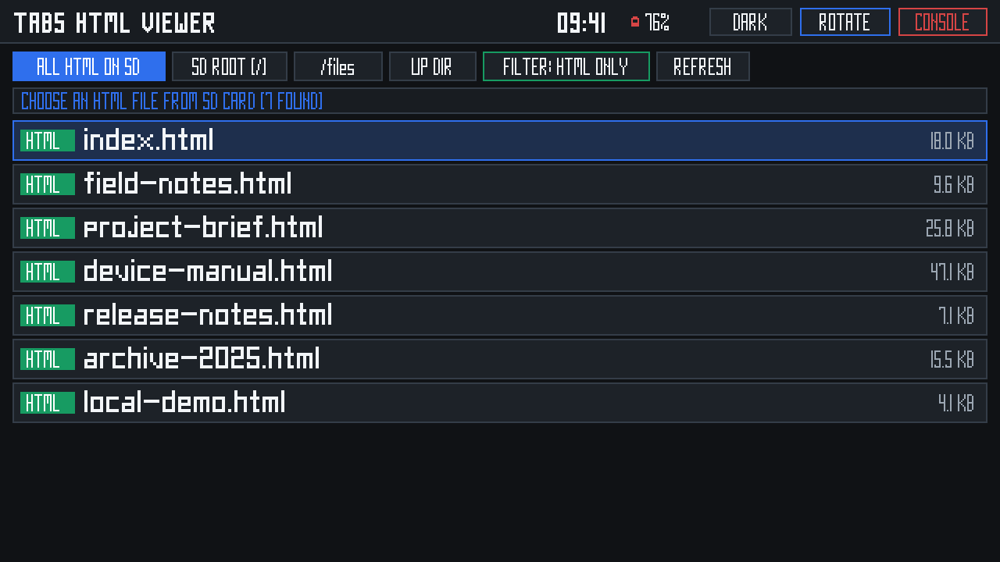
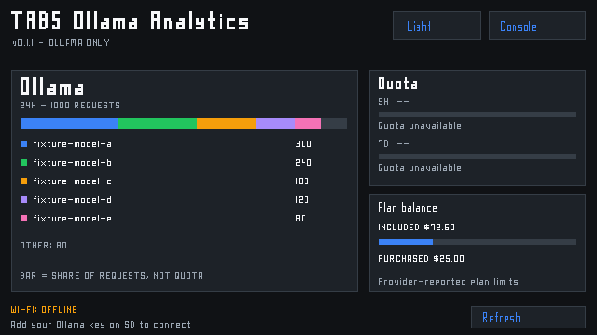
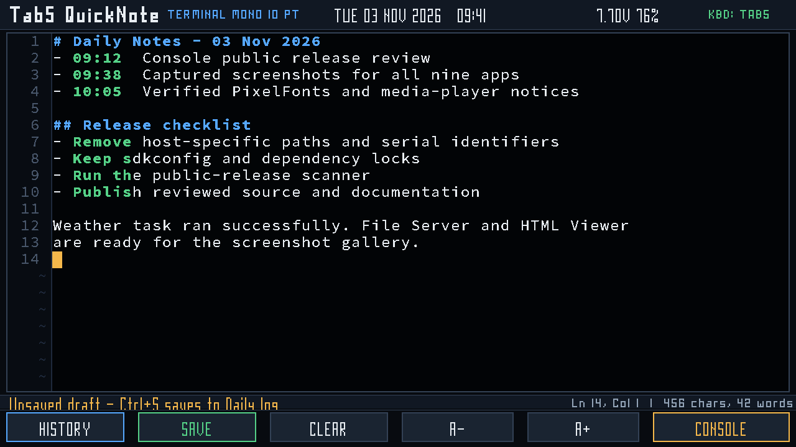
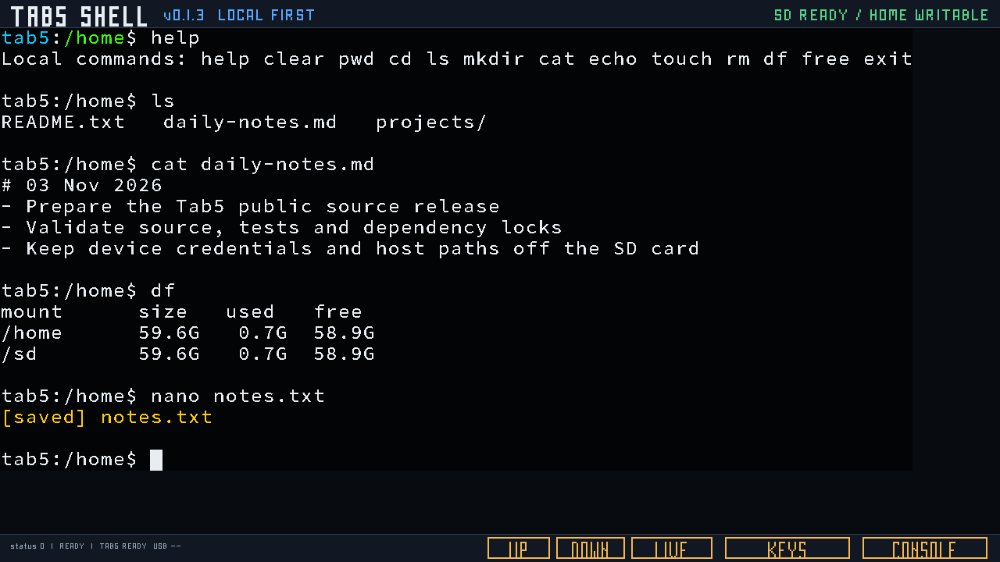
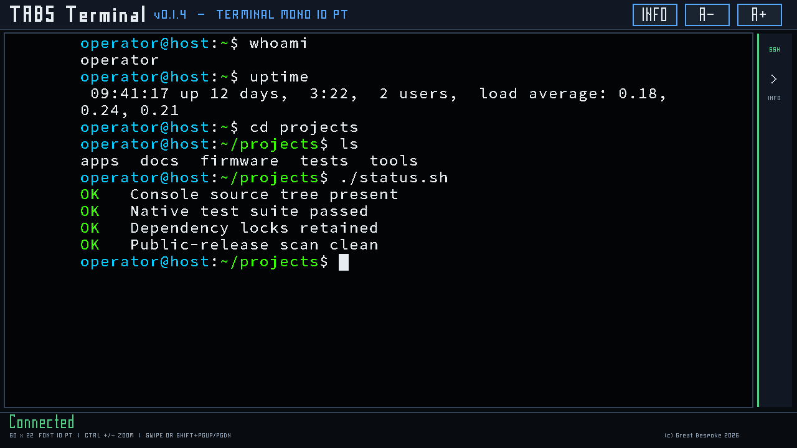
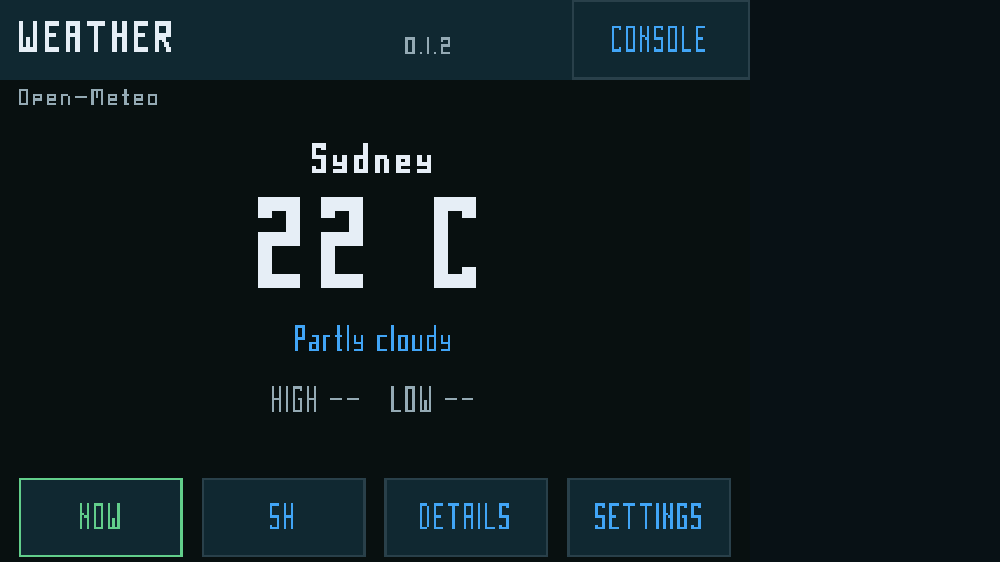
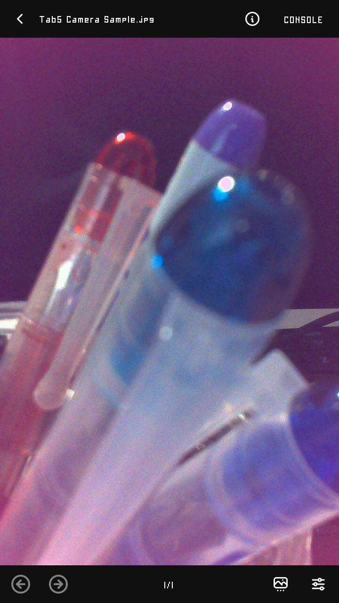

LIVE TELEMETRY
Battery, SD capacity, RAM, PSRAM, flash allocation, RTC and keyboard state in one dashboard.
M5STACK TAB5 / ESP32-P4 / CONSOLE 0.3.7
A resident launcher for the M5Stack Tab5, built around device telemetry, settings, radio controls and a validated SD application library. Console stays in the factory partition while each firmware runs safely from an inactive OTA slot.

SOURCE-RENDERED UI PREVIEW / SYNTHETIC TELEMETRY
RESIDENT SYSTEM
Console is the stable control surface around the applications: it checks hardware, exposes live status and validates every SD package before boot.
Battery, SD capacity, RAM, PSRAM, flash allocation, RTC and keyboard state in one dashboard.
Deterministic sorting, image identity checks, 5 MiB slot limits and inactive-slot installation.
Factory-compatible ESP32-C6 Wi-Fi and Bluetooth controls with guarded radio power and initialization.
PixelFonts chrome and damage-aware redraws keep the launcher responsive without periodic full-screen repaints.
SD APPLICATION LIBRARY
Purpose-built applications share Console's visual language, hardware layer and safe return path. Select a card to inspect its capabilities.
APP.01 / CAMERA

A portrait camera workspace for the Tab5 sensor stack, with framing tools and local SD capture.
APP.02 / FILES

A browser-based SD explorer that works over the Tab5 hotspot or an existing LAN connection.
APP.03 / HTML VIEW

An offline SD document reader with a full-screen picker and a clean, touch-driven reading surface.
APP.04 / OLLAMA

A compact dashboard for Ollama request activity, model mix and provider-reported balance.
APP.05 / QUICKNOTE

A focused Markdown workspace with durable SD notes and recovery from interrupted edits.
APP.06 / SHELL

A local-first command environment with bounded tools, a native editor and optional SSH.
APP.07 / TERMINAL

A zoomable SSH terminal with a keyboard-first workflow, VT100 rendering and local scrollback.
APP.08 / WEATHER

A network-aware Open-Meteo client for current conditions, forecasts, rain, wind, sun and moon.
APP.09 / fMP3

A Console-skinned media player for local audio, video and images, backed by the upstream media engine.
HARDWARE + RECOVERY MODEL
The launcher and applications target a known ESP32-P4 revision and keep recovery, radio firmware and user data outside the application update path.
16 MB flash, ST7121 display/touch and the factory ESP32-C6 radio image remain the reference configuration.
Console validates project identity, chip target, revision range, segment checksum, SHA-256 and the 5 MiB slot limit.
The resident Console stays at 0x10000; applications never replace it, erase NVS or overwrite the C6 image.